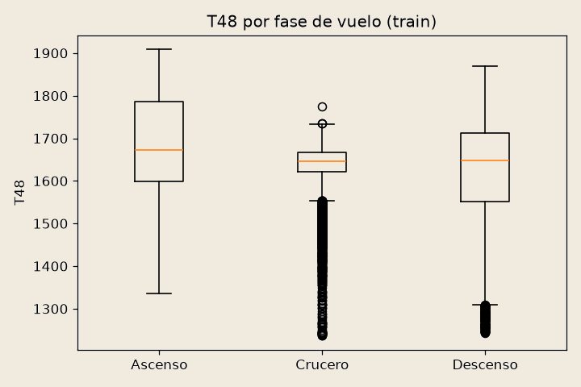
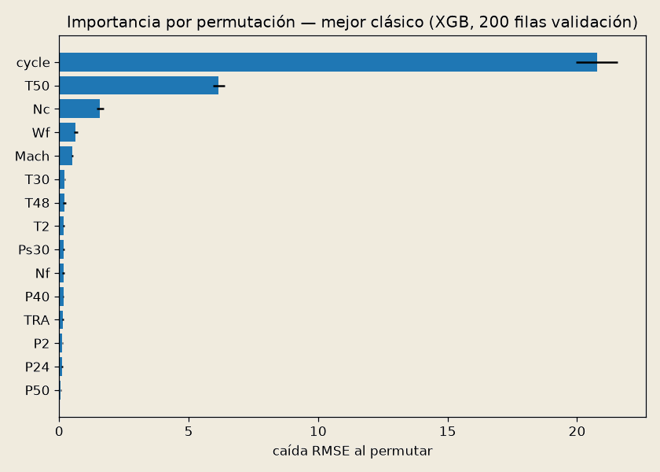

Concluyo: el desgaste se mide donde hay horas.

Concluyo: hay que acertar en la cola, no en la media.

Concluyo: con el régimen dentro, el modelo aprendería pilotaje.

Concluyo: se residualiza antes de modelar.

Concluyo: 18 canales no aportan 18 veces.
Ascenso / Crucero / Descenso desde alt y Mach. Entra como one-hot en los clásicos.
Canal 19 del BiLSTM. Su utilidad se mide en la ablación.
Los tres primeros son los de reparto; los dos últimos, los que justifican la residualización y el canal de reloj.
Un motor se calienta porque se rompe o porque el avión sube a tope. Si no se separan las dos cosas, el modelo aprende pilotaje en vez de desgaste.
Un Ridge por sensor —14— sobre un polinomio de grado 2 en alt · Mach · TRA · T2. Lo que sobra es el residuo: la degradación.
Solo con los motores 2·5·10·18·20. Ningún otro participa: es la línea de la que cuelga todo lo demás.
19 canales escalados para la red y 93 features de resumen para el árbol. El mismo residuo, dos vistas.
Catorce ajustes lineales sobre 52.635 filas: segundos. Es el paso más barato del pipeline y el que más cambia lo que viene después.

Si el residuo todavía separara fases, todo lo que viene después aprendería a volar, no a envejecer.
Random Forest baja de 7,157 en train a 9,070 en validación y es el más caro en tiempo: sobreajuste.
Se elige por rmse_val, no por test: el test se lee una sola vez por familia y elegir con él es hacer trampa.
Los 9 modelos de fila están registrados en MLflow y se comparan en la vista Compare por rmse_val.

Una fila = una lectura. El modelo ve el régimen, no la historia.
Una ventana = la secuencia que hace visible el desgaste.
Una lectura no ve degradación. La degradación es una secuencia.
Los granos no se mezclan: 11,034 de fila y 4,338 de ventana no miden lo mismo.



El modelo de fila responde «¿cómo está este motor en esta lectura?». El de ventana responde «¿hacia dónde va?».
En el secuencial las cuatro variantes caen en 5,878–5,974: el reloj no cambia el resultado. En LGBM cuesta +0,77.
Decisión: cyc_norm es canal del BiLSTM y no entra en LGBM ni en el meta.

Probamos algo que no dimos en clase y lo medimos: el reloj no mejora el secuencial. Saber descartarlo vale más que añadirlo.
Sobre [p_lstm, p_lgb]. Elige α = 88,6 en el propio holdout. α alto porque las dos ramas miran el mismo motor y están correlacionadas: sin regularizar, los pesos se dispararían.
Sobre las mismas dos columnas. Corrige cuando una rama se desvía mucho; el Ridge promedia. No ve sensores, ni ciclos, ni RUL.
p_meta = 0,5 · Ridge + 0,5 · LGBM. No se aprende un tercer peso: con 2.535 filas de holdout solo añadiría varianza.
El de 14 ridges limpia sensores (física). El de una fila es el baseline clásico. Este solo mezcla dos predicciones ya hechas: si te dicen «otro Ridge», mira qué entrada recibe.

Cuando se le dio el reloj al meta se lo quedó todo —100 % del peso en cyc_norm—. Por eso el juez solo ve dos columnas.
El global esconde el reparto: U14 pesa el 12 % de las ventanas y aporta el 45 % del error cuadrático. Por eso se publican global y macro.
Puente honesto de la asignatura: el LGBM sobre base adaptada cae en 7,067 (NASA 5731,3), justo el primer peldaño de la cascada.


Serie completa: XGB 11,034 → MLP-E2 7,721 → LGBM 7,067 → BiLSTM 5,654 → +EMA5 5,618 → Híbrido-C 4,338. El test se leyó una vez: todo se eligió por validación y lo firma el manifiesto, no este deck.
Residuo del híbrido: sesgo +0,369 ciclos, rango −14,8 a +9,5. El 58,8 % de las ventanas se pasa de RUL —el lado que la NASA castiga— y el 4,3 % falla más de 10 ciclos.


Las dos ramas se apoyan en el reloj y en la temperatura de salida: dos vistas del mismo desgaste. El meta solo las concilia.
SHAP describe el modelo, no el motor: asociaciones, no causas. La EMA de producción queda fuera de la atribución y el BiLSTM se agrega por canal. Coste del error: 4,338 ciclos ≈ 43.000–130.000 USD si todo cayera en AOG (supuesto declarado).